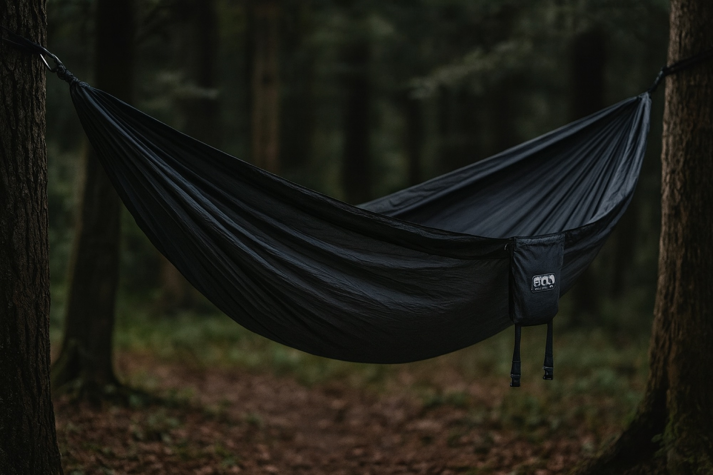
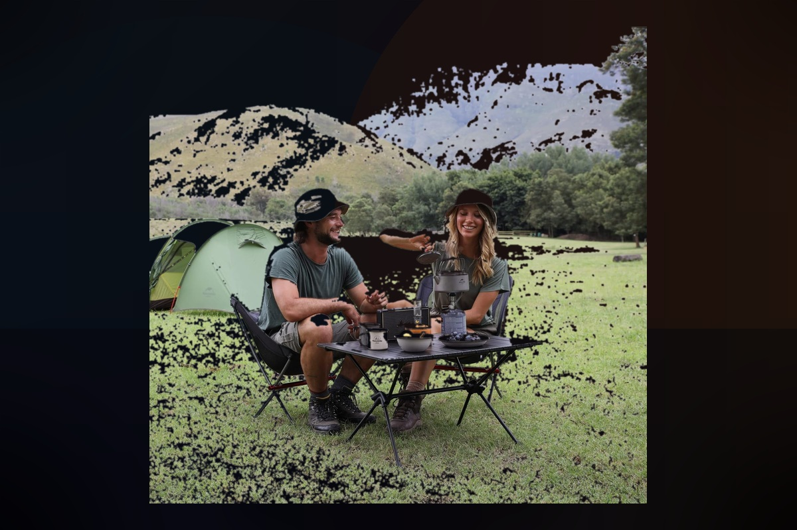

SIT
Make the main hangout place obvious
A good chair or hammock changes the whole site because it gives people a reason to stop hovering around the tailgate or sitting on cooler lids.
 By Chris Follin
By Chris FollinGUIDE
Comfort gear is not survival gear, but it is often the difference between a campsite you tolerate and one you want to stay in. The good pieces solve specific site problems: nowhere decent to sit, no clean work surface, food stress, stale vehicle air, cold evenings, or hygiene that never quite dries.
I do not care about comfort gear just because it sounds nice. It still has to earn room. The good stuff here solves a real irritation: sitting badly, balancing food on your lap, losing cold food to a weak cooler, sweating in a vehicle, or making camp feel flimsy once you actually want to stay outside awhile.
The easiest way to keep comfort gear from becoming clutter is to give every piece a job. I want comfort that changes how the site works, not comfort that only looks good in the packed gear photo.
SIT
A good chair or hammock changes the whole site because it gives people a reason to stop hovering around the tailgate or sitting on cooler lids.
SET DOWN
A small table prevents the slow drift into dirt, chair arms, laps, and open bins. It is comfort because it reduces friction every hour.
STAY
Fans, roof vents, fire pits, and heaters matter when they extend the comfortable part of the day. They are excessive only when they do not match the trips you actually repeat.

A compact chair that makes the basic sit-down moment feel good without taking over the whole vehicle.

Roomy camp-lounge hammock for shaded sites where spare trees, downtime, and proper straps are already part of the plan.

Comfort-first reclining chair for drive-in trips where the chair gets used for hours, not minutes.

A comfort item disguised as food storage because camp feels calmer when the cold-food plan works.

A small surface that stops meals, tools, and pocket stuff from defaulting to dirt, laps, and open bins.

A controlled evening-fire option when smoke, messy cleanup, or firewood hassle would make wood less appealing.

Low-draw airflow for cabins, campers, and vehicle sleeping when still air starts making rest miserable.

The permanent roof-ventilation answer when sleeping in the vehicle is a repeated part of the setup.

A serious cold-weather comfort tool for vehicle, trailer, or shop-style camp setups with a real heat plan.
I want the comfort item that buys back time or mood. The chair has to make sitting outside feel better. The cooler has to remove food stress. The table has to stop the ground from becoming the default countertop. Fans, blankets, and fire gear have to change actual camp conditions, not just sound cozy in a list.
START HERE
A chair changes the site more than people expect. If you never want to sit down, the whole camp feels less inviting. That is why the chair usually comes before the table.
THEN THIS
The table, cooler, blanket, and airflow pieces reduce a surprising amount of background irritation. Good comfort gear is often just organization in disguise.
AFTER THAT
The recliner, fire pit, roof fan, and diesel heater are not essential for every setup, but they are clearly worth it when they match the trips you repeat.
Comfort gear goes bad when it solves an imagined campsite instead of the one you actually use. If setup gets slower, packing gets messier, or the item only comes out once, it is probably not comfort anymore.
TOO MANY SEATS
Chair plus hammock plus recliner can make sense for basecamp, but it is silly for quick overnights. Pick the seat that matches the trip pace.
TOO MUCH BULK
If the comfort item makes the loadout harder to pack, it needs to earn that space every trip. Big chairs, fire pits, and heaters should not be automatic.
WRONG SEASON
A fan, fire pit, or heater is only brilliant when conditions call for it. Pack for the actual heat, cold, wind, fire rules, and sleeping arrangement.
A quick-dry towel is too small and generic to deserve a standalone review without real long-trip notes, but the role absolutely matters. Wet cotton towels, dusty hands, lake stops, and vehicle showers all make camp feel worse when drying and cleanup are an afterthought.
TOWEL
A microfiber or travel towel earns its place when it dries quickly, packs small, and can hang somewhere with airflow. If you hate the texture, buy a better travel towel instead of pretending you will use it.
CLEANUP
One towel for showers and one rag for dishes, spills, or dirty gear keeps the comfort lane from getting gross. That separation matters more than the specific towel brand.
DRYING
A quick-dry towel still fails if it gets balled up wet in a tote. Add a line, hook, or mesh pocket to the camp routine and it becomes useful instead of damp clutter.